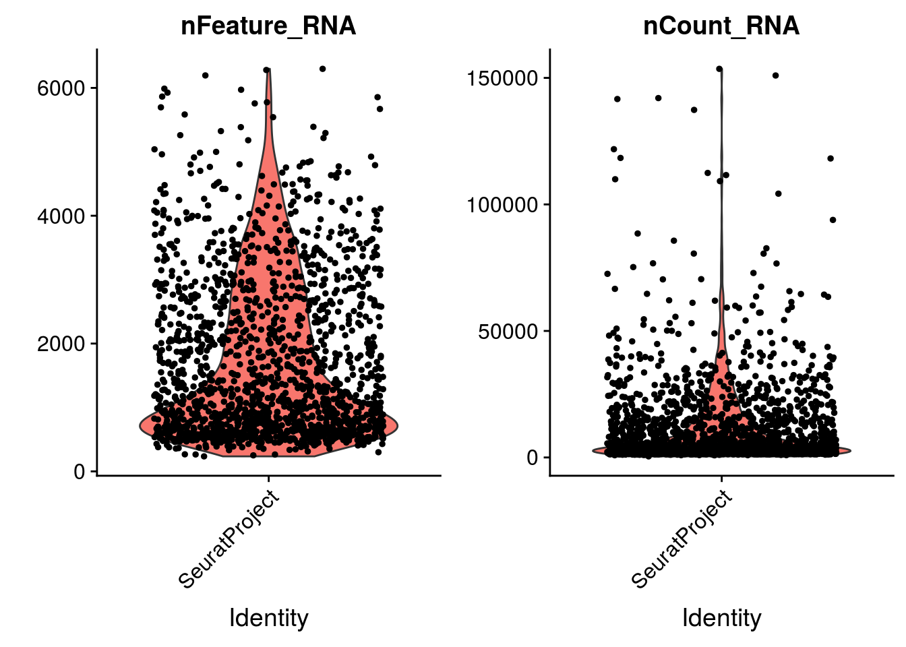

2 Basic single cell pipeline
The steps below encompass the standard pre-processing workflow for scRNA-seq data.
- Filter out low quality cells : undersequenced cells, debris (broken cells or floating pieces of RNA) and multiplets (several cells in one droplets)
- Normalize the expression to reduce the sequencing biais.
2.1 Remove “low quality cells”
The are a few metrics commonly used to filter out low quality cells :
- the number of unique genes detected in each cell :
- cells with low gene count : helps to remove empty droplets, debris and undersequenced cells.
- cells with high gene count : these cells are more likely to be cell doublets or multiplets. The number of multiplets expected in your sample is directly correlated with the number of cells you loaded in 10X. The more cells you loaded, the higher the chance is to have 2 or more cells in one droplet.
- total number of UMI detected within a cell
- the percentage of reads that map to the mitochondrial genome : low-quality / dying cells often exhibit extensive mitochondrial contamination
Seurat allows you to easily explore QC (quality control) metrics and filter cells based on any user-defined criteria using the slot ‘meta.data’.
2.1.1 Number of genes detected per cell

## 0% 25% 50% 75% 100%
## 235.0 705.5 1312.0 2593.5 6322.02.1.2 Number of UMIs per cell


You aim while looking at these graphs is to define thresholds/cutoff that you will aply to filter cell out. Try to identify the cells that behave differently from the main population.
2.1.3 Percentage of mitochondrial genes
To calculate the perentage of mitochonrial genes expressed in a cell, you must first provide a list of mitochondrial genes. In the paper, the authors did not provide their list. As a quick replacement, we will consider that mitochondrial genes are all the genes that starts with the pattern ‘mt:’. For a more refine analysis, you can use flybase or another source and carefully identify mitochondrial genes.
We then use the PercentageFeatureSet function, which calculates the percentage of counts originating from a set of features.
2.1.4 Group exercice on filtering
On of the most difficult parts of single cells pre-processing is to decide the threshold to define low and high quality cells. From the various graphs, decide the levels for low high quality cells dependant on the number of genes expressed per cell, the total UMIs per cell and the percentage of mitochonrial genes.
Discuss as a group.
# DEFINE THE CUTOFF VALUES AND VISUALIZE THE RESULTS
minGene = 500
maxGene = 5800
minUMI = 12500
maxUMI = 60000
maxpct_mt = 18
# the function "subset" helps you to filter the cells
# we create a new seurat object containing the filtred cells
mydata_filtrd <- subset(mydata, subset = nFeature_RNA > minGene & nFeature_RNA < maxGene & nCount_RNA > minUMI & nCount_RNA < maxUMI & percent.mt < maxpct_mt)
VlnPlot(mydata_filtrd, features = c("nFeature_RNA", "nCount_RNA", "percent.mt"), ncol = 3)


2.2 Normalize the expression in cells
After removing unwanted cells from the dataset, the next step is to normalize the data. The objective is to correct for the sequencing bias.
As we noticed in the previous graphes, the cells do not have the same number of total UMI. This may be due biological differences (some cells express less RNA than other) but is likely to be the result of cell-specific sequencint biais (some cells have been less sequenced than other).
We are going to apply a global scaling method, which supposes that all cells are about the same RNA content. It aims to remove cell-specific systematic biases by scaling expression measures within each cell by a constant factor. We use a “LogNormalize” method that normalizes the feature expression measurements for each cell by the total expression, multiplies this by a scale factor (here the median total UMI per cell), and log-transforms the result.
mydata_filtrd <- NormalizeData(mydata_filtrd, normalization.method = "LogNormalize", scale.factor = median(mydata_filtrd$nCount_RNA))The resulting data are stored in the ‘data’ slot
Once you have pre-processed your data, you are ready for further analyses : identify sub-population of cells, pseudo-time analyses…